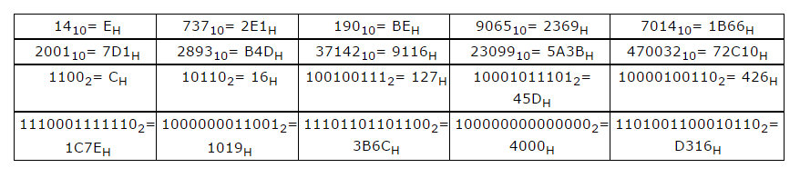
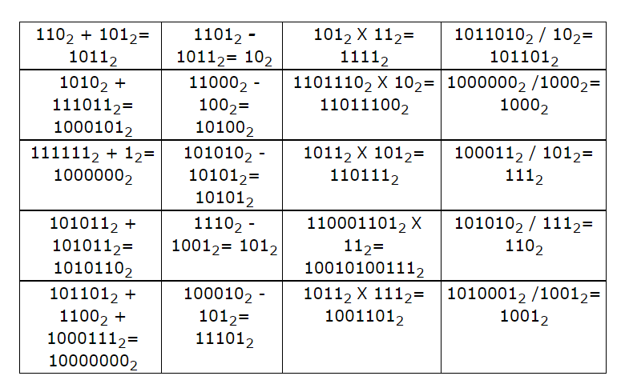

Sistemas de Numeração
1. Como ficaria os números abaixo se converte para o sistema de numeração decimal?

Nesta vídeo-aula, disponibilizado no canal Eletrônica Fácil, ensina como conver-ter um
número binário em decimal.
2. Como ficaria os números abaixo se converte para o sistema de numeração binário?

Nesta vídeo-aula, disponibilizado no canal Eletrônica Fácil, ensina como converter um
número decimal em binário.
3. Como ficaria os números abaixo se converte para o sistema de numeração hexadecimal?

Nesta vídeo-aula, disponibilizado no canal Eletrônica Fácil, ensina como conver-ter um
número decimal em hexadecimal.
4. Como ficaria os números abaixo depois das operações de aritmética binária?

Nestes 4 vídeos explicativos, ministrada por Orlando Leite, ensina como fazer contas
de adição, subtração, multiplicação e divisão usando os números binários.
5. No sistema de numeração hexadecimal, qual é o número seguinte de FH?
O número seguinte a FH é 10H , pois como em qualquer sistema de numeração, quando
é atingido o último valor possível com um dígito, o próximo é sempre 10.
Evolução da Computação
6. Quais as principais características apresentadas pelo ENIAC?
O ENIAC possuía 93 metros quadrados, 18 mil válvulas e 1.500 relés. Fazia 5.000
somas ou 357 multiplicações por segundo. Era programado por cartões perfurados (dados)
e configurações de chaves e fios em soquetes (instruções). Neste documentário
disponibilizado no canal Jor Nass, Mostra cenas do funcio-namento e utilização do
primeiro computador eletrônico.
7. Nos dias de hoje, que meios de comunicação estão convergindo para tornarem-se
um dispositivo único?
Telefone, Computador e Televisão.
8. Por que Charles Babbage é conhecido como o "pai da computação"?
Porque ele concebeu a Analytical Engine, em 1833, uma máquina que apresen-tava
todas as características básicas dos computadores modernos. Sendo por-tanto, a
primeira idéia de um computador. Ela não funcionou em sua época, mas no início
do século XX foram criadas máquinas baseadas nela que funcionaram. Neste vídeo
documentário, disponibilizado no canal mashupHistory, mostra a trajetória e biografia
de Charles Babbage.
9. Por que os circuitos integrados provocaram uma grande revolução no mundo da computação?
Porque eles integram grandes quantidades de componentes em pequenas pastilhas
de silício, com isso os equipamentos puderam diminuir sensivelmente de tamanho.
Vejamos neste vídeo ilustrativo feito por Alcino Franco de Moura Júnior e disponibilizado
em seu canal, mostra como os circuitos integrados influenciou o mundo nesta grande
revolução no mundo da computação.
10. Quais são as principais aplicações dos sistemas de computação na área governamental?
Imposto de Renda enviado por computador e controle da Previdência Social.
11. Qual a diferença entre digital e analógico?
As máquinas analógicas utilizam valores numéricos inteiros e fracionários -
sistema de numeração decimal - tendo, portanto, uma infinidade de "estados
possíveis", como por exemplo as máquinas que utilizam engrenagens mecâ-nicas.
As máquinas digitais utilizam o sistema de numeração binário (0s e 1s), portanto só
trabalham com valores inteiros. Para representarem valores fracio-nários utilizam
a potência de 10. Exemplos dessas máquinas são o computador e os relógios digitais.
Nesta vídeo-aula, produzida e disponibilizada no canal Eletrônica Fácil, explica
qual a diferença entre digital e analógico e quais as suas características.
12. Se um equipamento multimídia apresenta imagens, sons e textos integrados,
por que a televisão não pode ser considerada um equipamento multimídia?
Porque a televisão não possui a principal característica da multimídia, a interati-vidade.
13. Que computador é considerado, legalmente, o primeiro computador eletrônico?
O ABC (Atanasoff-Berry Computer), criado em 1942 por John Vincent Atanasoff e Clifford Berry.
14. Que tecnologias são características de cada uma das gerações de computadores?
A primeira geração é caracterizada pelos computadores a válvulas. A segunda geração
é caracterizada pelos computadores transistorizados. A terceira geração é caracterizada
pelos computadores que utilizavam circuitos integrados e a quarta geração é caracterizada
pelo uso dos microprocessadores. Acompanhe nesta vídeo-aula do IFRO Porto Velho
Zona Norte, a evolução do Sistema Opera-cional e da arquitetura dos computadores ao
longo do tempo.
15. Por que a IBM não manteve a liderança nas vendas dos PCs, já que foi
ela que inventou esse tipo de computador?
A IBM permitiu que outras empresas pudessem fabricar computadores baseados no
padrão criado por ela (o IBMPC), então essas empresas começaram a vender mais
computadores do que a IBM.
16. A evolução da computação está dividida em quantas gerações e quais
foram as suas características que marcaram cada geração?
Geração Zero foi teve inicio na pré-história onde houve a necessidade de
fazer contas cada vez mas complexas. Atribui-se com o tempo ao surgimento
do ábaco o marco inicial dos dispositivos de cálculo. Em seguida veio a Primeira
Geração dos computadores, que teve início a partir do ENIAC, também passando
a usar válvulas e relés em suas operações. Na Segunda Geração veio os computadores
transistorizados, sendo mais modernos e econômicos. Em seguida veio os computadores
a Terceira Geração onde os primeiros computadores incorporavam circuitos integrados,
que permitiu o surgimentos de computadores menores e com mais capacidade de
processamento. A Quarta Geração foi marcada com a comercialização do primeiro
computador pessoal comercial chamado Altair fazendo com que os computadores
se tornasse mais populares a ser comercializado. No 1ª vídeo, produzido por Edinei
Polato, ele narra da Geração zero até as três primeiras gerações de computador.
No 2ª vídeo, ele narra da era dos Computadores até a Interface Gráfica.
E no final do vídeo, ele faz uma breve homenagem à Steve Jobs.